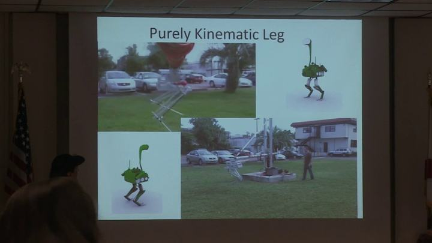
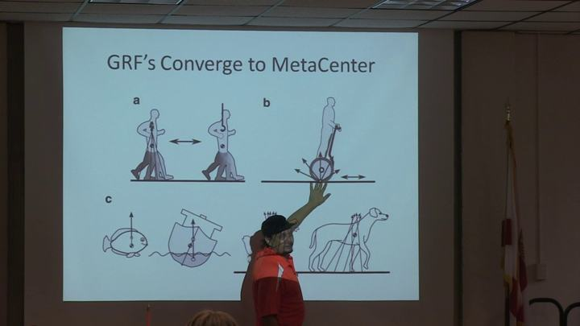

The XTI walker is a compass gait: two legs, a hip and a ramp. Whether it keeps walking after a nudge is a question about a ball in a bowl.

30 s
Johnny: the ball in a bowl and geometric stability · FastRunner lecture, Part 2 · open on YouTube · Media: Xobotix / Chance Robotics. Needs internet.
Plain language After each step the walker's state is checked like a photo taken at every heel strike. If a small push shrinks from photo to photo, the gait is stable: the ball rolls back to the bottom of the bowl. On steeper ramps the bowl gets shallower, until the walker starts alternating long and short steps (period doubling) and finally falls.
At 3°, press Push a few times: the walker recovers in a few steps (|λ| ≈ 0.6).
Try 4.2°: still stable, but recovery is slower (|λ| closer to 1).
Try 4.8°: the period-1 gait is unstable. Watch the steps alternate, then fall.
Grad exercise: linearize P numerically and compare the eigenvalues with the curve.
Graduate layer · EEE 6734 Hybrid dynamics: continuous swing (M(q)q̈ + C(q,q̇)q̇ + G(q) = 0) plus an impact map at heel strike (angular momentum conserved about the new contact and, for the trailing leg, about the hip). The Poincaré map P on the post-impact section has a fixed point x* found by Newton's method. Stability is given by the eigenvalues of DP(x*): |λ|max < 1. Goswami et al. (1998) report period doubling and a route to chaos as γ grows. In this model (l = 25 cm, mh/m = 2) |λ| crosses 1 near 4.4°.
More from the Xobotix channel

49 s
SLIP is one spoke: neutral stability, and why real runners peak early · FastRunner lecture, Part 5 · open on YouTube · Media: Xobotix / Chance Robotics. Needs internet.
From the Xobotix lectures
“a ball in a bowl is used as a … physical analog for stability, the attractors at the bottom. So if I do nothing and just leave it alone, it will tend to converge there as the energy dissipates and that's geometric stability.”
Johnny Godowski, Part 2 · 01:10 · auto-captions, [corrections] ours
“the idea of a sphere floating in water. There's no friction, but attitude stability is preserved like a boat in the water. And then with friction, now we have rocking chair stability, so speed is stabilized.”
Johnny Godowski, Part 2 · 03:53 · auto-captions, [corrections] ours
“our traditional [SLIP] model is one spoke of our wheel. And the ground reaction forces always go right through the metacenter which is at the CG. So that's neutral stability.”
Johnny Godowski, Part 5 · 02:26 · auto-captions, [corrections] ours
Quotes are YouTube auto-captions from the Xobotix channel. [Brackets] mark our corrections of misheard words, and timestamps open the video at that spot. Full notes: research/SCIENCE_FROM_LECTURES.md.